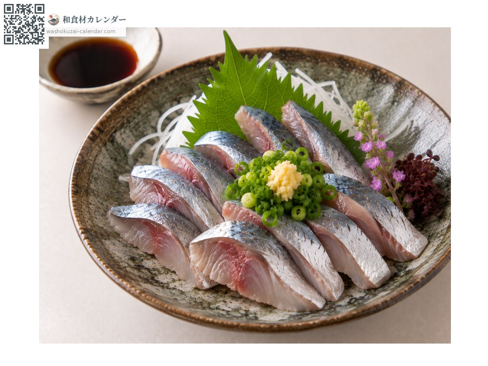
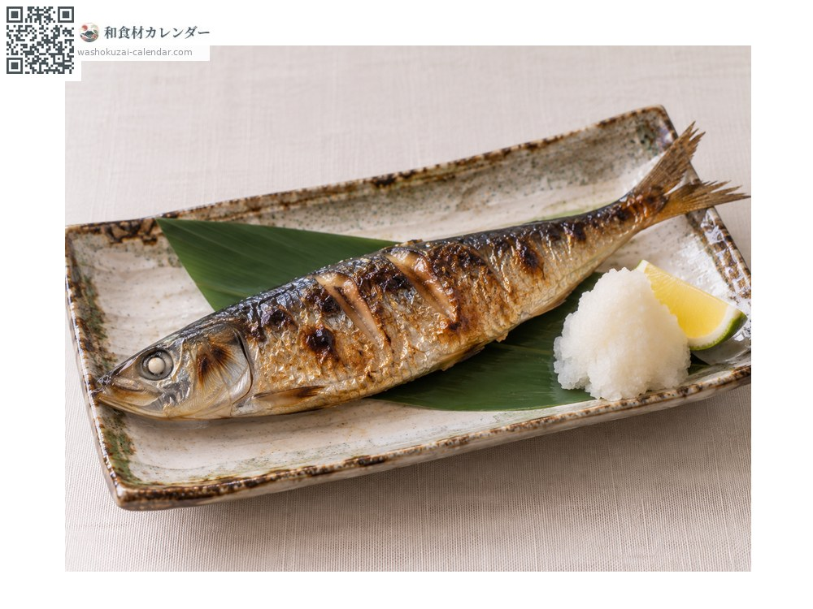
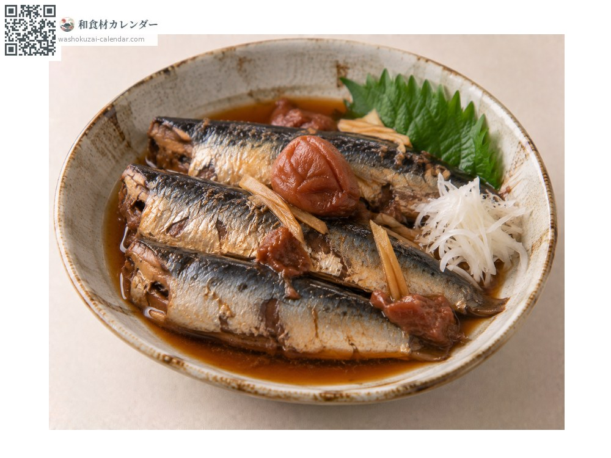
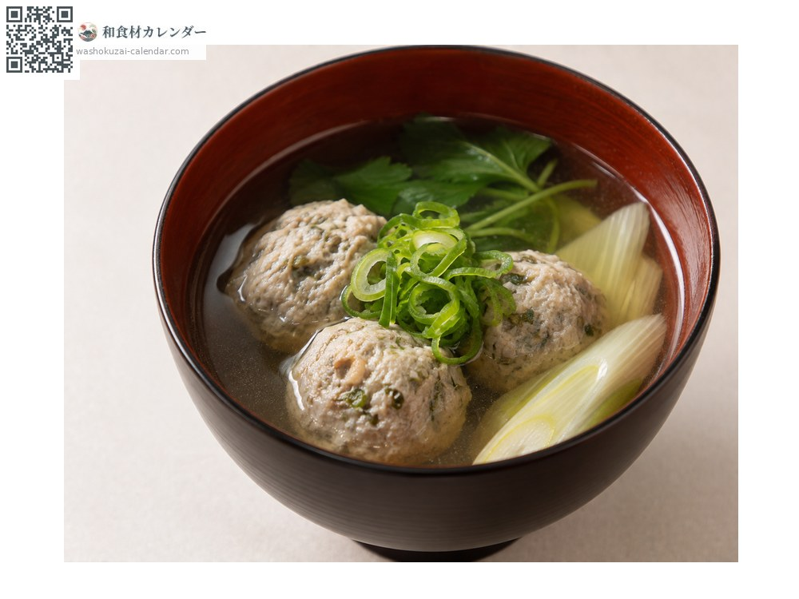

海鲜
真沙丁鱼
マイワシ まいわし maiwashi
别名maiwashi、iwashi
应季时期为6月、7月、8月

应季时期
1月
2月
3月
4月
5月
6月
7月
8月
9月
10月
11月
12月
应季有供应
烹饪方法

生鱼片
够新鲜可用手直接剖开。配姜汁酱油。

盐烤
油脂丰厚时，只用盐就足够。

与梅干同炖
与梅干同炖，连细骨都会变软。

鱼丸汤
剁碎捏成丸子，做味噌汤。
挑选方法
体侧黑点清楚、背部泛蓝光。腹部结实，眼睛不混浊。
保存方法
坏得很快，当天食用。要保存就去头去内脏、抹盐后冷藏。
主要产地
小知识
梅雨时节捕获的称为「入梅いわし」，是一年中油脂最丰厚的。